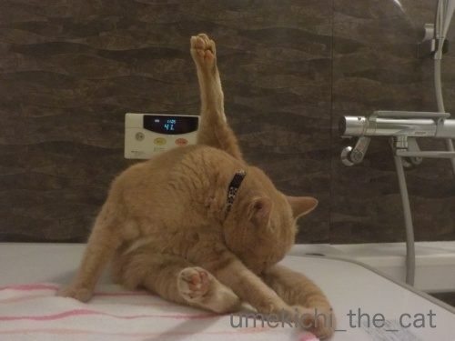
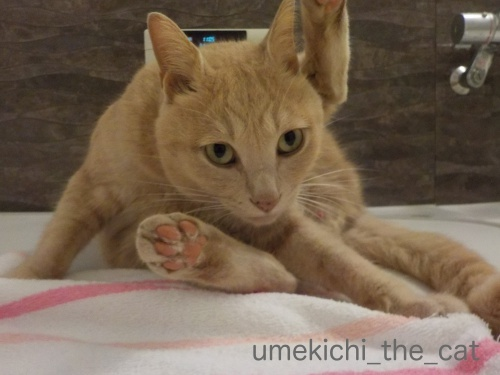
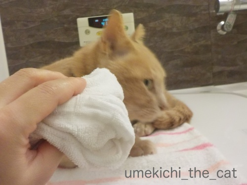
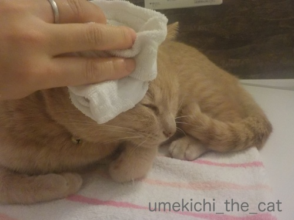
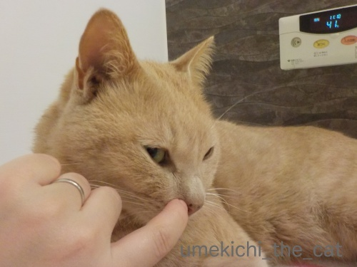
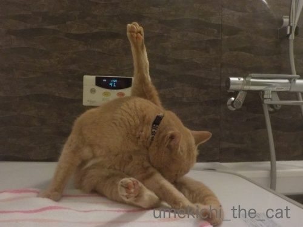
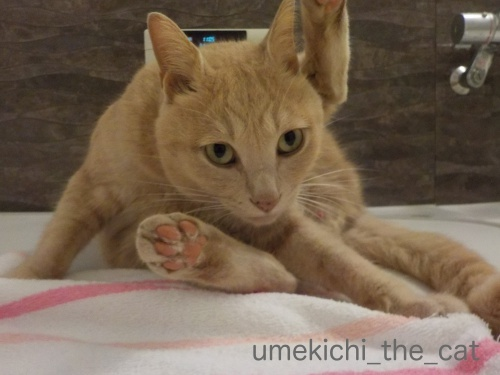
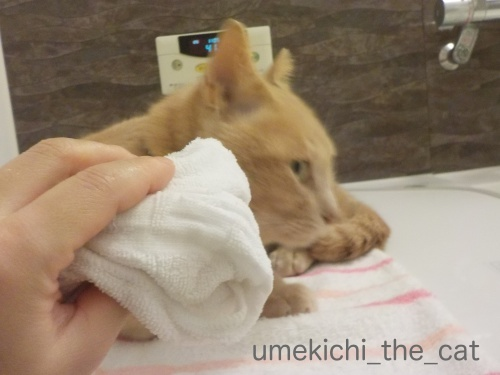
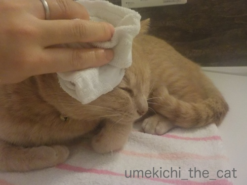
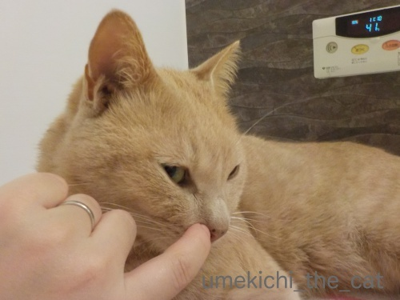

梅吉のバスタイム [梅吉]
（今日の写真はお風呂用防水カメラで撮影したので画像が荒いです。）

お風呂に入るとまず梅吉専用タオルに乗って

セルフグルーミング。あちがぴ〜ん！

開脚v

一通り終了したら蒸しタオルでお顔とお耳、体を拭かせていただきますm(_ _)m

気持ち良いですか？

最後はお鼻ほじほじ！時々大物が取れてきますよ(*>艸<)
（あくび編 28秒です）
緩みっぱなしでひどい顔でしょー！
この顔見るのが1日の終わりの楽しみであります。
（白目編 24秒です）
白目で恍惚の表情。うめきちったら。
梅吉はお風呂大好き。
昨年秋頃からはおとーさん、おかーさんされぞれのバスタイムに付き合って
1日２回、連湯 （れんとう）しておりますw
 ↑ガブッと一押し↑
↑ガブッと一押し↑
こんばんは、みなさん。わたしちぃママよ。
名前もちぃなんだけどこのお店で本当にちぃママをしているの。
お店のママは隣にいるzombiekongママ。お店のオーナーでもあるの。
え？ママの髪型がすごいって？
そうなのこれはうちの家系の遺伝なのよね。わたしも普段はこんな感じ。
うちの家系って？ああ、そうなのzombiekongママは私の姉なのよ。
14日のバレンタインの夜はzombiekongママのおともだち
てんてんさんのお誕生会があったの。その報告をするわね。

zombiekongママは別に経営してるアフロバーで外せない用事があって。
私がてんてんさんのパーティーの仕切りを任されたのよ。
大切なお客様だから失敗のないようにってママに言われてたんだけど
うちのお店の子達なら大丈夫。間違いないわ。日本中どこのお店に出しても恥ずかしくないもの。
（左から）ChatBleuちゃん、marimoちゃん流石だわ！
ほらてんてんさんあんなに楽しそう。

こっちのボックスでも良い感じね。
（左から）emiちゃんも（emiちゃんったら・・・：後述リュカさんのところで見てね）
くつしたにゃんちゃんも。完璧なおもてなしだわ。
バーテンの2kくんも安心して見てるわね。
（2kさん「くん」なんて言ってごめんなさい。）
それにこの夜はとびっきりのサプライズを用意したの。
「てんてんさま。JKもよろしいかと思いますが・・・
今日はこの子、リュカちゃんを素敵な大人のレディに変身させてみようと思いますの。」
（リュカさんのホステス修行の経緯はこちらemiさんも件もね）
「見事に変身したじゃない・・・あの子・・・。お酒もめちゃ強だし。恐ろしい子！」
（恐ろしい子！ご存知ない方はググってみてね。）
お誕生会は盛り上がって終了。
成功を祝してバーテンの2kくんとわ〜い＾＾
（ちょっと過ぎちゃったけど）てんてんさんお誕生日おめでとうございます！
〜おまけ〜
姉妹証拠写真
チャーさんがお友達になってくださいました＾＾
その様子は次回で。

お風呂に入るとまず梅吉専用タオルに乗って

セルフグルーミング。あちがぴ〜ん！

開脚v

一通り終了したら蒸しタオルでお顔とお耳、体を拭かせていただきますm(_ _)m

気持ち良いですか？

最後はお鼻ほじほじ！時々大物が取れてきますよ(*>艸<)
（あくび編 28秒です）
緩みっぱなしでひどい顔でしょー！
この顔見るのが1日の終わりの楽しみであります。
（白目編 24秒です）
白目で恍惚の表情。うめきちったら。
梅吉はお風呂大好き。
昨年秋頃からはおとーさん、おかーさんされぞれのバスタイムに付き合って
1日２回、連湯 （れんとう）しておりますw
こんばんは、みなさん。わたしちぃママよ。
名前もちぃなんだけどこのお店で本当にちぃママをしているの。
お店のママは隣にいるzombiekongママ。お店のオーナーでもあるの。
え？ママの髪型がすごいって？
そうなのこれはうちの家系の遺伝なのよね。わたしも普段はこんな感じ。
うちの家系って？ああ、そうなのzombiekongママは私の姉なのよ。
14日のバレンタインの夜はzombiekongママのおともだち
てんてんさんのお誕生会があったの。その報告をするわね。

zombiekongママは別に経営してるアフロバーで外せない用事があって。
私がてんてんさんのパーティーの仕切りを任されたのよ。
大切なお客様だから失敗のないようにってママに言われてたんだけど
うちのお店の子達なら大丈夫。間違いないわ。日本中どこのお店に出しても恥ずかしくないもの。
（左から）ChatBleuちゃん、marimoちゃん流石だわ！
ほらてんてんさんあんなに楽しそう。

こっちのボックスでも良い感じね。
（左から）emiちゃんも（emiちゃんったら・・・：後述リュカさんのところで見てね）
くつしたにゃんちゃんも。完璧なおもてなしだわ。
バーテンの2kくんも安心して見てるわね。
（2kさん「くん」なんて言ってごめんなさい。）
それにこの夜はとびっきりのサプライズを用意したの。
「てんてんさま。JKもよろしいかと思いますが・・・
今日はこの子、リュカちゃんを素敵な大人のレディに変身させてみようと思いますの。」
（リュカさんのホステス修行の経緯はこちらemiさんも件もね）
「見事に変身したじゃない・・・あの子・・・。お酒もめちゃ強だし。恐ろしい子！」
（恐ろしい子！ご存知ない方はググってみてね。）
お誕生会は盛り上がって終了。
成功を祝してバーテンの2kくんとわ〜い＾＾
（ちょっと過ぎちゃったけど）てんてんさんお誕生日おめでとうございます！
〜おまけ〜
姉妹証拠写真
チャーさんがお友達になってくださいました＾＾
その様子は次回で。

カフェオレ色の梅吉

梅吉 2023年8月10日 永眠


梅吉と出会った譲渡会

犬猫の理由なき殺処分ゼロ
妄想広告
UMEKICHI 光

爆発的に早い！
時々攻撃的！
Thanks to Mr.Boss365
爆発的に早い！
時々攻撃的！
Thanks to Mr.Boss365

梅吉さんほじほじが好きなんだー。うちの猫みんな嫌がりま~す。
アフロバーのマダム(!?)アフロというよりキノコのような⋯。金井克子さんとかに似てるような⋯(古っ) ちぃさんはちぃママがぴったり。「恐ろしい子」の白目(!!)も笑えます。登場させてくれてありがとね。
by zombiekong (2019-02-18 00:53)
お風呂大好き？
でも湯船には入らないよね？
by 英ちゃん (2019-02-18 06:14)
梅吉さん、至福の時ですにゃあ^^
by ニコニコファイト (2019-02-18 06:40)
お鼻ほじほじって、こんなに気持ち良いんだ！
by ぽちの輔 (2019-02-18 06:44)
ちぃさん おはようございます。
鼻ほじほじ、嫌がるのかと思ったら、結構気に入っているようですね。気持ちがいいのでしょうね。可愛いです。
by SORI (2019-02-18 07:00)
猫見風呂♪ 癒しの時間ですねぇ～(#^.^#)
鼻ほじほじ！嫌がらないのですね（笑
by きぃ (2019-02-18 07:03)
お風呂場ポカポカあったかですものねー。
梅吉くんも極楽、極楽って感じ。
お風呂に入っている人間も、のんびり梅吉くんを見ながら長湯になっちゃいそうですね。
ZEPETO妄想劇場！！すごい！他の人のストーリーともめちゃからんでる！
リュカさんのホステス修行、お酒の修行はいらないものねー。
でも、JKファッションならいいけど、モノホンJKだったらお酒はダメよー^m^
by ChatBleu (2019-02-18 07:40)
梅吉さんのお顔がとろけてますねぇ♪( ´▽｀)
蒸しタオルも気持ちよさそう( ^ω^ )
連湯してくれる梅吉さん、大人の気配りが出来てるなぁ=(^.^)=
うちはかみさんと入ったら満足するので
なるべく私が先に入るようにしてますw
が、付き合ってくれるのはアルくらいです(⌒-⌒; )
by ニッキー (2019-02-18 08:10)
梅吉君の白目画像にもだえました(笑)
会社のパソコンで見て、にへにへぐへぐへの
怪しいおばちゃん（あ、まちがい！怪しいJK）になりました(笑)
そうなのー。お風呂場で鼻ほじほじして
大物が取れると、めちゃめちゃ嬉しいよね^^
でもね、あおは鼻くそ出たこと無いんだよ。さすがイケニャンでしょｗ
うみの鼻くそはすごいよー(笑)
JKリュカは、ホステス合格でしょうか！？ｗｗ
by リュカ (2019-02-18 09:59)
おはようございます。
サウナ感覚で、身体もフキフキで綺麗になり良い感じ！！
幸せ呼ぶパワーストーン梅吉君を磨いてますね？習慣化しているのが凄いです。
梅吉君の鼻ホジホジ！！最高です（笑）
何で？欠伸なんだろう？白目？寄り目？いいキャラしてます（笑）
夜のZEPETO妄想劇場？
zombiekongママ？姉さんでしたか？目がzombieさんだ！！面白すぎる（笑）
恐ろしい子？リアルです？デザート食べないで、グラッパです！！（笑）
ちぃママさん、ハマり過ぎ・・・アフロ仏像目指してますね（爆・爆）！？(=^･ｪ･^=)
by Boss365 (2019-02-18 11:33)
さん より くんの方が 合うお年頃だから
くん って呼んでね（＾＾）
by (。・_・。)２ｋ (2019-02-18 18:01)
梅吉さん、なんて気持ちよさそう～！
2度もお風呂でくつろいでるのね～癒やされます＾＾
お鼻ホジホジまでさせてくれるんだ～柔らかくなってるから取れるのかな？
ZEPETO、衣装もポーズも多彩ですね～髪型変わると誰かわからない‥
zombiekongさんまで登場とは♪
by sana (2019-02-18 18:29)
梅吉さん、ホジホジが本当に好きなんですね。
恍惚の表情がまた素敵です(^^)
by kou (2019-02-18 18:54)
お鼻ほじほじｗタラオも好きですよ～。
でもこの！恍惚の表情は見せません。白目大好き！半目も大好き！(≧▽≦)
てんてんさんのお誕生日楽しかったよね。
そういえばリュカさんのところでは、私のお姉ちゃんがちぃさんだったよ。
と、いうことは～。zombiekongさんとちぃさんと私で三姉妹ｗ
アフロ三姉妹？(#^^#)
by emi (2019-02-18 20:03)
zombiekongさん＞
不思議でしょー！お鼻ほじほじ全然嫌がらないのですよ。
むしろ気持ち良さそうな（笑）
とにかく触られるのが好きで（その延長でガブガブもするけど）
口元から鼻筋、おでこが特に触られたいポイントなんですけど
お鼻の穴も含まれてるっとことなんでしょうか(*>艸<)
金井克子さん・・・？ごめんなさい知りませんw
（ググってみて）ああ、とんねるずが真似してた人ですね！！
ZEPETOに登場ありがとうございました。
おふざけにお付き合いいただいて感謝！ですm(_ _)m
英ちゃんさん＞
一緒に湯船に浸かる、が最終目標です！！
お湯が浅く張ってあるとこっそり入ってる時があるんですよ・・・
ニコニコファイトさん＞
気持ち良さそうでしょー0(≧▽≦)0
人間が出ても一人でまったりしている時もあるんですよ。
どんだけお風呂が好きなんだかw
ぽちの輔さん＞
ほじほじ、梅吉にはたまらないようですw
どうやら顔のどこを触っても気持ち良いらしい・・・
(目やにを取る以外）
SORIさん＞
目やにを取ろうとするとすごーく嫌がるんですが
鼻だとOK、なんですよねw
あんまり気持ち良さそうな顔するので
ついしつこくほじほじしちゃいます(*>艸<)
きぃさん＞
時々お風呂に来てくれないこともあるのですが
そんな時はとっても寂しいです；；
お鼻ほじほじ、Leaちゃんもいかがですか(≧▽≦)
ChatBleuさん＞
お風呂に入るのは人間と一緒に浴室に入ってくるのがほとんどですが
たまに遅れてやってくる時があって。
そんな時はまだかなまだかな〜なんて待ち時間＋いつものお風呂時間
でついつい長風呂に。
発汗するので健康にも美容にも良いかな0(≧▽≦)0
ZEPETO、最近妄想がひどくて大変ですwww
ニッキーさん＞
なかなか（梅吉専用タオルの上に）座らない時に
「お顔拭かないの？」と蒸しタオルを見せると
「おかおふいてくださいー！」とにゅ〜っとお顔を伸ばしてきて
ごろ〜んと寝転がります！
どうです！鼻血の出そうな自慢話でしょう0(≧▽≦)0
アルさんがいつまでもニッキーさんのお風呂に付き合ってくださるよう
願ってやみませんwww
リュカさん＞
鼻ほじほじされて白目ってねぇ・・・(*>艸<)
梅吉らしいでしょw
でもとっても気持ち良さそうな顔でしょう。
私も毎晩ニヤニヤしてますよ。
あおくん、鼻くそ出ないの！？
リュカさんに気づかれる前に自分で取ってるな、それはw
ホステスは合格よ！内定出します。卒業したら来てくださいwww byちぃママ
Boss365さん＞
そうなんです！まさにサウナ。
ふやけて鼻くそも取りやすくなるんですよ＾＾
鼻ほじほじされて百面相ってwww
梅吉らしくて笑っちゃいますよね！
白目の動画も良いんですが私はあくびも動画が大のお気に入りです0(≧▽≦)0
zombiekongさんにはアホな遊びに付き合ってもらっちゃいました。
アフロ姉妹で信仰の対象になろうかしら・・・
2kさん＞
了解したわ♡2kくん！（爆）
sanaさん＞
お風呂が好きすぎて人間が出た後も
一人で蓋の上でまったりしてますw
物音一つ聞こえてこないので時々生存確認したりして(⌒-⌒;
梅吉はお風呂に入ると何されてもOKになるので
お耳の中を拭いたり歯の掃除も（これはお怒りになる時もありますが）
出来ちゃいます。
お鼻ほじほじはびっくりくらい大きいのがふやけて綺麗に取れますよ(*>艸<)
ZEPETO、普段は絶対できない・しない髪型が楽しくなってきました。
もはや自分じゃなくてもいいやって（笑）
zombiekongさんにはお付き合いいただいて感謝、です！
kouさん＞
普段は嫌がる（時もある）のですが
お風呂でお鼻ほじほじするととっても気持ち良さそうで＾＾
恍惚の表情見たさにしつこくほじほじしちゃいます(*>艸<)
emiさん＞
いたいた！ほじほじ好きが0(≧▽≦)0
タラくんはどんなお顔してほじほじされてるんだろう！
大真面目な顔してたらそれはそれで笑っちゃうよねーw
そうなのよ！私たちアフロ３姉妹(*>艸<)
アフロのお誘いしようかと思ったんだけど
PCの調子が悪そうで（アバター情報w）
ワタワタしてるんじゃないかと思って遠慮しました。
（直りましたか？）
今度三姉妹集合の機会があったら参加お願いしまーす(*>艸<)
by ちぃ (2019-02-18 20:32)
お鼻ほじほじ動画最高～(≧▽≦)
お口半開きも白目も甲乙つけがたし！！
こてつにはほじほじしたことがないんですよ。
オデコと耳の後ろ辺りは少々触っても大丈夫ですが後はすべてNG。
しかし梅吉さんのこんな気持ちよさそうなお顔を見たらチャレンジしてみなくては♪ たとえ手に赤い線が増えても頑張る(*^▽^*)
by ゆきち (2019-02-18 21:23)
お鼻ほじほじ、メチャ気持ちよさそうですね！
うちは鼻ではなく耳ほじほじをやりますが、
けっこうお気に入りのようです。
バーとかスナック、もう何年も行っておりません。。。
by yes_hama (2019-02-18 21:34)
お～～～～～～～～幸せ～
こんなお店があったら毎晩飲んだくれそ～(*´∇｀*)ｷｬ～～～
by てんてん (2019-02-18 22:52)
梅吉さん 気持ち良さそうですね♪
ZEPET よろしくお願いします(^^)
by チャー (2019-02-18 23:12)
あちがピーンの梅吉さん、身体柔らかいですね〜
どのようになってます（笑）
複雑な体勢、これは真似できないよ（笑）
梅吉さん、お風呂の連湯は気持ちが良いからなのですね。
お鼻ホジホジ、恍惚の梅吉さんから、
ちぃさん何か見せてくれましたね（笑）
そうですか〜
zombiekongママと姉妹だったのですね（納得ですww）
by kiki (2019-02-18 23:27)
蒸しタオルでふきふき・・・気持ち良さそうですネ（*´∀｀*）
鼻ほじほじもなんという恍惚フェイス・・・
ほぉ！ちぃ姐さんかと思ったら、ちぃママだったのですね！
いや、実は月影先生だったのですね（笑）
zombiekongママのお顔がアイコンでぴったりはまっているのがスゴイ・・・
by Ja-Kou66 (2019-02-18 23:48)
恍惚の白目動画、おもろすぎるわー(≧∀≦)
何回も見てしまいました！
一日2回の連湯はすごいー。
by よーちゃん (2019-02-19 06:46)
気持ちよさそう( *´艸｀)
本文とは関係ないコメントで恐縮です(;^ω^)
お住いの地域がわかりませんが(;´∀｀)
ちょっとお知らせ。
私のいとこが東京でのイベントに参加してます。
もし、お時間あったら、足を運んであげてください_(._.)_
＜イベント出展のお知らせ＞
●「丸猫展」第15回Catアートフェスタ2019
2月13日(水)～26日(火)午前 9時～午後9時(最終日は午後4時まで)
東京駅近く、丸善丸の内本店oazo 4Fイベントスペース
※期間中の13日～26日に出展していますが、後半の
20日～26日のみ在廊しています。
基本在店時間は12時～20時ですので、その時間は会場にいます。
（休憩などでいなかったらごめんなさい。）
今回は「コルディアルメンテ 鴻巣三千代」で出展させて頂きます。
http://blog.cordialmente.net/
by ともち (2019-02-20 11:32)
お鼻ほじほじ～～～(*^_^*)なんでこんなにじっとしてるの(笑)
あくびも可愛いけど私は白目の方が好き♡
by palpal (2019-02-20 15:42)
ゆきちさん＞
こてつくんにほじほじするタイミング・・・
もうすっかり私自身がする気持ちで考えてますw
やっぱりお膝でまったりタイムでしょうか。
ほじほじされてるアホヅラは（ごめんなさい）
真正面から見るのが醍醐味だと思うので
相方さんのおひざ時がベストでしょうか！
カメラ片手に頑張ってほじってくださいねー0(≧▽≦)0
yes_hamaさん＞
お耳ほじほじも気持ち良さそうな顔しますよね＾＾
ただしうちの場合はお風呂限定w
お風呂だとされるがままで黙って気持ち良さそうにしているのに
リビングでしようとするとがぶ〜っかねこぱんちが飛んできます。
なんでだろう・・・ ( ꒪⌓꒪)
バー・スナック、私はリアルでは数回しか行ったことありません！
宅飲みサイコー！！
てんてんさん＞
わ〜い0(≧▽≦)0喜んでいただいて嬉しいです！
ボトルキープいただきましたので是非またいらしてください（爆）
チャーさん＞
リビングでこんなことするとガブ〜っとか猫パンチなんですがw
お風呂だと気持ち良さそうな顔してくれるんですよ＾＾
次回の二人はJK＆ボーカロイドコーデ！
kikiさん＞
お風呂は大好きですね＾＾
最近は時間になるとおっとを先導するように
先にお風呂に行くようになりました(≧▽≦)
ほじほじ後は、ほら、やっぱり収穫したものはご披露しないとw
この動画の時はブツが小物だったのであまり見えないんですが
黒いものがはっきり写っているバージョンもあったような(*>艸<)
ZEPETO姉妹、そっくりでしょー！！
Ja-kou66さん＞
お鼻ほじほじでこんな恍惚なるなんてねぇぇぇぇぇw
大変嬉しゅうございますが
梅吉って不思議、と飼い主ながら思います(⌒-⌒;
zombiekongさんのアイコンがこんなにアバターにハマるとは思ってませんでした。
あまりに出来が良かったので（自画自賛）
zombiekongさんにお伺いすると快諾いただけたので
記事にして見ました＾＾
よーちゃん＞
気持ちよすぎて白目になるってねwww
梅吉は本当に不思議面白い子ですわー！
お風呂が好きすぎて猫じゃ無い疑惑も(⌒-⌒;
ともちさん＞
コメントありがとうございますm(_ _)m
梅吉はお風呂大好きでお鼻ほじほじであっても
喉をゴロゴロ鳴らしたりするんですよw
お知らせいただいたイベントですが
残念ながら私の住んでいる地域ではなく・・・
リンク先も見てきました＾＾
可愛い作品の数々、たくさんの方が見にきてくれると良いですね！
palpalさん＞
お鼻ほじほじが好きなんてねー0(≧▽≦)0
これ、お風呂以外ですると怒るんですよwなんでだろうwww
by ちぃ (2019-02-20 20:58)